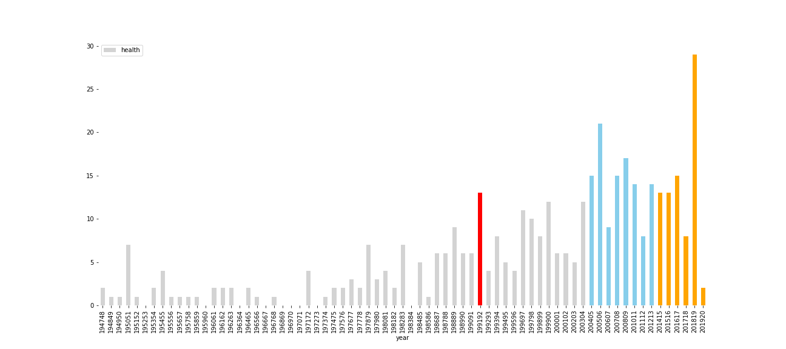
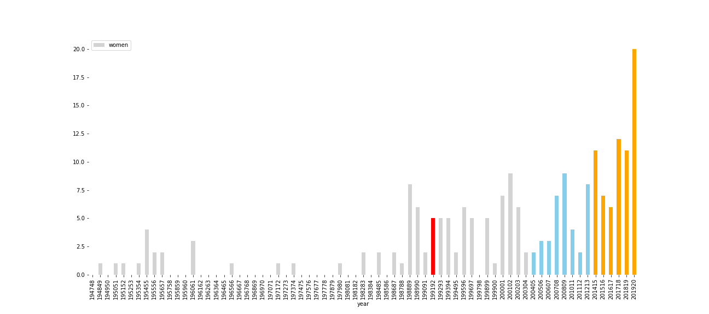
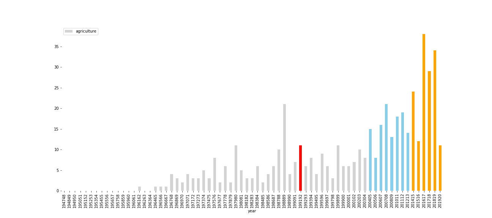
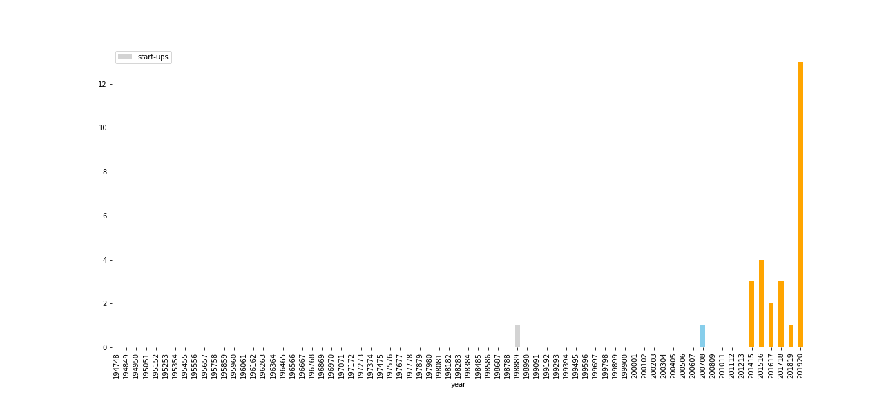

India's ruling party Bhartiya Janata Party announced its first budget last week after a landslide victory in the recent national election. The speech delivered by the first woman finance minister Nirmala Sitharam faced criticism from the former finance minister P. Chidambaram who called the speech 'an insipid Budget'. Chidambaram's criticized the current finance minister for not mentioning key accounting numbers in the speech.
"The Finance Minister's speech was an usually opaque exercise....Has there been a Budget speech that does not disclose the total revenue, the total expenditure, the fiscal deficit, the revenue deficit, the additional revenue mobilization or the financial concessions?", he said in his statement on his Twitter account. .
Analysts on the Primetime debates were divided on the speech with some appreciating the finance minister for not throwing hard numbers out there. Others said announcing numbers upfront in the speech would have made it better.
A text analysis of the speech shows that the latest speech mentioned financial terms such as crore, expenditure, revenue, allocation least number of times in independent India.
Use of financial terms by various finance ministers
The budget speech is important as a lot of people pay attention to it. The final document is long and would need time to go through it.
Sources: India Budget wesbite
The current Indian government put an ambitious target of $5 trillion in gross domestic product by 2025. It would be easy to cross that milestone according to analysts and economists as it would mean the Indian economy has to grow at 12 percent annually. The word 'trillion' made it to budget speech for the first time in last year's annual budget speech delivered by Arun Jaitley. This year's speech had the word more than 10 times and a section titled $5 trillion Economy.
$5 trillion slogan
Catchy phrases and ambition targets are appealing
Sources: India Budget wesbite
Developmental issues
Current Indian govt.'s budget speeches show increased use of words such as women, start-ups, health, agriculture
Word 'health'
Woman-related terms
Sources: India Budget wesbite
Word 'agriculture'
start-ups
Sources: India Budget wesbite